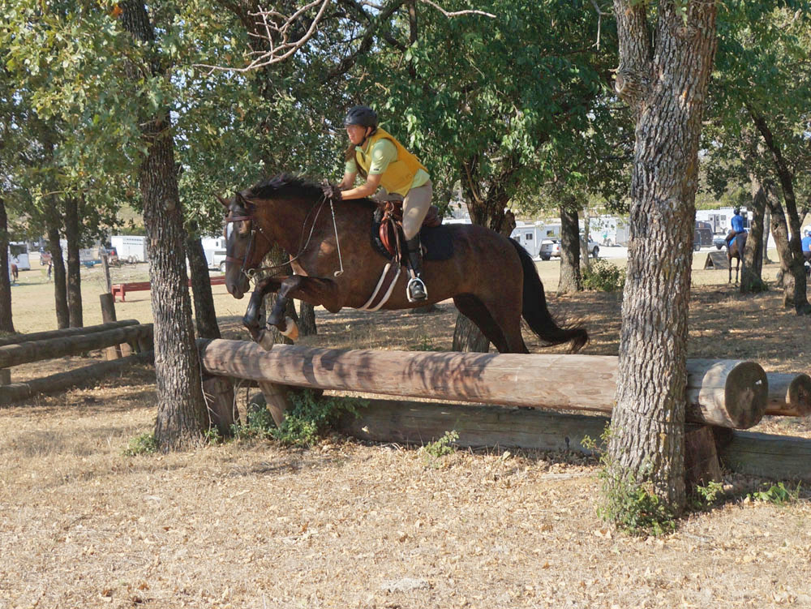

Schooling at Quail Run
A year ago we schooled here and we were glad that I stayed on.
We had started out with a small group and Miaren was eager
and Meg had to talk me into staying on while she led us around to start.
This time was so much better.
Warming up. I posted these two to show how I'm heavy in my left foot. That leg typically
looks longer.
But on landing I switch to my right. Poor guy, I'm probably just uneven most of
the time.
After warm up Meg had us jump 3 jumps that snaked through the course. There were
horses everywhere, but we called our jumps and he never acted distracted by the
other horses.
Maybe a bit too exaggerated of a release for cross country.
Before this we took some bigger jumps and he was lazy and rapped one with his front
feet. After that he was more careful and I really felt this bascule.
So pleased with keeping my leg forward and the direct release. When the jumps are
smaller I can think about my own position more.
And showing my position over the last jump wasn't a fluke.
Now to figure out how to ride wider jumps correctly. I started out fairly decent,
giving him his head, but not holding enough with my lower leg and letting it slip.
Which starts to show more as we have more air time with a broader jump. He pushed
off how he needed, but I need to listen to Meg when she says hold on with the lower
leg. I shouldn't be seeing under the flap of the saddle at this point.
If this had been a typical vertical, we'd be touching down now. As it is, it's pretty
clear that somewhere along the way I got left behind. I remember riding this jump
and feeling good about it. I felt the back of the saddle and his mouth more than
I like to, but these pictures explain why my trainer made comments. I think it's
interesting that when I said it felt fine rather than push the point she just emphasized
lower leg for the rest of the day. I'm sure there's a balance being my trainer,
between correcting and worrying about scaring me into not jumping certain jumps
again.
And Miaren using his hind end to catch me and pop me back into the saddle.
Where I was secure to canter on and give him free rein in apology.
When we went to investigate this one it looked like something I'd set up at home
when I was a teenager. Not as tall as the fence panel I'd run Taaka at, but Meg
measured it around 3'3" or so.
This is what Miaren rapped the first time over. He
doesn't like hitting things, so this time he lifted his shoulders and tucked more.
I should be looking at my next jump, but at least on cross country you usually have
a beat or two to figure out where to go next.
He jumped this one awkwardly a number of times. And when he got the short spot and
jumped up instead of out I got wings for elbows and reverted to standing in my stirrups.
Meg, again, was interesting in how she handled it. Any time this happened at different
jumps, she would have us come again and have me push for a long spot. It was a balance
between balancing for the jump and letting him move on. And sometimes, if he was
hesitant about the jump, it took a few tries.

But, when we fixed the horse, surprisingly, it fixed my position.
My new desktop picture. I could feel 3 strides out how he was powering to the jump
and I knew it was going to be perfect.
It was coming up hill, so he was
engaged and may have used more power than needed.
Most of our bank jumps have been utilitarian. Just get up the bank. Working on them
this weekend I was starting to see how my timing was off, and how he was a better
judge of where he needed to jump from so that it wasn't just getting up the bank,
but up and moving on, continuing to canter away.

A year ago we walked off this. Today we trotted down and cantered away. I think
soon cantering off of it will be in our
repertoire.
We were decently in sync for jumping up the single bank, but even here we might
be too close for an easy canter away. Too close and I'm learning that it's a hop
up and then get going again.
This is a bounce up (no stride between the banks), compared to Greenwood where we had a stride to get organized.

Here's us getting to the top and Miaren learning the hard way. We did it one time
well with a loss of impulsion and trotting when we got to the top. Then this attempt,
where the approach seemed engaged, but he didn't have the bounce concept in his
mind yet. We've been wearing boots for a few months now and this is why. He scraped
the back boot loose, but his leg underneath was fine. Looking at my position I think
I just tried to stay out of his way while he worked it out.

And the fun thing about him. He learns. The spots feel long to me, but it's what
works to get us up the bank. Some day we might even do this and take the jump at
the top. That's really a work out for his hind end.
The first time over he hesitated and stepped over, but the next time he cantered
around, over and through the water. There were horses everywhere and we had to pick
our time to get space free, but he focused on what we were doing and it was like
being in a jumping warm up sharing the space with everyone.
He still looks when we walk by a ditch, but I'm more relaxed that he's going to
jump. And that's when it just works.
Towards the end we were both getting a bit sloppy and he wasn't so eager to give
me a happy walk/canter like at the start.
When the jumps are smaller he is more likely to chip in. Here he finally took it
in stride, even though we were still a bit close. Yeah, for some reason my default
goes back to not bending my knees enough.
I've been worried about following someone over a jump, like in the hunt field, so
Katie gave us a lead through the woods and over this jump. He stayed behind without
catching up and I'm feeling better about following over a fence in the hunt field
now.
That's David and Ketel in the lead with Katie and Bella behind us. Miaren stayed
back, but followed nicely.

I could feel when we stopped he was a little more excited after cantering in a group,
but if we keep practicing, maybe we can get out in the hunt field.